1과목: 기하광학 및 광학기기
1. 다음 중 빛의 성질에 관한 설명으로 틀린 것은?
2. 초점거리가 60cm 인 대물렌즈와 초점거리가 3cm 인 대안 렌즈로 만든 망원경의 배율은?
3. 초점거리가 각각 10cm 인 볼록렌즈와 오목렌즈를 동일 광축 위에 나란히 놓아 한 개의 새로운 렌즈를 만든다면 새로운 렌즈의 유효초점거리와 렌즈의 종류는? (단, 두 렌즈 사이의 간격은 2.5cm이다.)
4. “빛이 한 점에서 다른 점으로 전파될 때 그 광선의 경로는 광학적 길이가 최소화되는 경로를 택한다”는 원리를 설명 한 사람은?
5. 구면거울 2m 앞에 물체가 있을 때 상의 거리가 50cm라면 이 거울의 곡률반경은 몇 cm 인가?
6. He-Ne 레이저에서 발생한 평행광선이 광축을 따라서 단일 볼록렌즈에 의해 집속될 때, 초점에 한점으로 모이지 않고 크기를 갖는 원으로 모이는 것은 무슨 수차 때문인가?
7. 다음 중 종색수차를 최소화하는 방법으로 적절한 것은?
8. 그래프에서 undercorrected spherical aberration에 관한 광축으로부터의 높이(h)와 초점거리(f)의 관계를 옳게 표현한 것은?
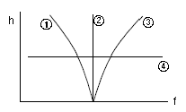
9. 15 디옵터의 얇은 렌즈 두 개가 8cm 떨어져 있다면 두 렌즈에 의한 유효초점거리는 몇 cm 인가? (단, 두 렌즈는 모두 공기 중에 있다.)
10. 다음 중 주경이 오목 거울, 부경이 볼록 거울로 구성된 망원경은?
11. 크라운 유리의 C(H)선에 대한 굴절률이 1.5204, D(Na) 선에 대한 굴절률이 1.5230, 그리고 F(H)선에 대한 굴절률이 1.5293 일 때, 이 유리의 색분산과 관련된 아베수(Abbe's number)는 약 얼마인가?
12. 근축광선 이론을 도입할 경우, 다음 중 Snell의 굴절 법칙을 바르게 나타낸 것은?
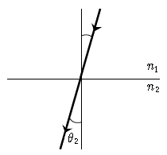
13. 굴절률이 n 인 매질에서 광선이 d 만큼 이동할 때 광선 도달행렬(lay-transfer matrix)은 어떻게 표현되는가?
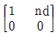
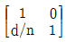
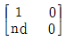
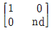
14. 1mm 당 10개의 줄무늬가 있는 물체에 대한 두 광학계의 MTF 값이 각각 0.7 과 0.8 이다. 두 광학계를 동시에 사용할 때, 전체 MTF 값은 얼마인가?
15. 그림과 같이 입사각 θ1 으로 빛이 광학적으로 밀한 매질(n1)에서 광학적으로 소한 매질(n2)로 입사할 때, 예측되는 굴절광의 경로는 어느 것인가?
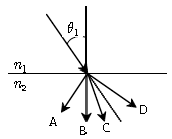
16. 배율이 5 인 천체 망원경의 두 렌즈가 30cm 떨어져 있을 때 대물렌즈와 대안렌즈의 초점거리는 각각 몇 cm 인가?
17. 깊이 2m 인 수영장에 굴절률이 5/3인 액체로 채워져 있다. 수영장의 표면을 원형의 판으로 덮어 수영장 바닥에 놓여 있는 점광원의 빛이 새어 나가지 못하게 하려면 판의 최소 반지름은 약 몇 m 로 하여야 하는가?
18. 다음 중 렌즈의 초점을 구하는 방법이 아닌 것은?
19. 물체의 오른쪽으로 10cm 떨어진 곳에 놓인 렌즈가 물체의 5 배인 허상을 만든다면 렌즈의 굴절능은 몇 D 인가? (단, 물체와 렌즈는 공기 중에 놓여 있다.)
20. 어떤 물체를 f-4 에 1/400 초로 촬영하는 것이 적당한 노출이라면 f-8 인 경우 적절한 노출시간은 몇 초인가?
2과목: 파동광학
21. 박막 도파로에 대한 설명으로 틀린 것은?
22. 다음 중 홀로그램에 대한 설명으로 옳은 것은?
23. 다음의 간섭계 중 진폭분리형 간섭계가 아닌 것은?
24. 폭 50㎛의 좁고 긴 슬릿 바로 뒤에 초점거리 1m인 블록 렌즈를 놓고 단색광을 수직으로 입사시켰을 때, 렌즈의 초점면에 나타난 회절무늬의 중심에서 첫번째 어두운 중심까지의 거리가 12mm 라면 이 빛의 파장은 몇 ㎛ 인가?
25. 음향광학 변조기는 투명한 결정이나 유리로 된 물질의 한 끝에 압전소자를 부착하여 초음파를 발생시켜 입력광을 변조시킨다. 투명 매질 내 초음파에 의해 입력광에서 일어나는 광학적 현상은?
26. 광통신용 섬유에서 모드분산(modal dispersion)을 줄이는 방법이 아닌 것은?
27. 광섬유를 이용하여 센서를 구성하려고 한다. 압력이나 진동을 측정하는 광섬유는 어떤 광학적 현상을 이용하는 것인가?
28. 4.0×1014Hz의 주파수를 가지는 빛이 단위 cm당 10000개의 선을 가지는 회절격자(grating)에 수직으로 입사된다. 이 grating으로 볼 수 있는 스펙트럼의 가장 큰 차수는?
29. 파장이 1.5m 이고 빔의 직경이 1mm인 가우스 광속을 렌즈에 입사시켜 지름이 10m 인 광섬유 코어에 집속시키려고 하면, 필요한 렌즈의 초점거리는 약 몇 mm 인가?
30. 나트륨등에서 나오는 노란빛은 5890Å 과 5896Å 의 두 파장으로 되어 있다. 이 빛의 스펙트럼을 회절격자를 사용하여 분해하여 보려고 한다면, 어떤 빛을 사용하여야 하는가? (단, 나트륨등의 기체압력과 온도에 의한 선폭 확대는 무시한다.)
31. 굴절률 1.5 인 유리면에 굴절률 1.38 인 MgF2 박막을 한 층 입혀서 550nm 에 대한 반사율이 최소가 되게 하려고 한다. 이 때 필요한 박막의 최소 두께는 약 몇 nm 인가?
32. 그림과 같은 주기함수 f(x)를 푸리에 급수(Fourier series)로 바르게 표현한 것은?
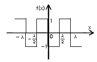
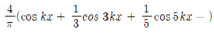
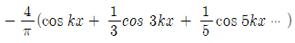
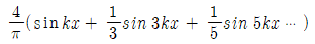
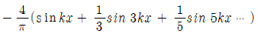
33. Ψ(x, t)=A sin (ax-bt)의 조화 파동함수가 갖는 속도의 크가와 방향을 올바르게 나타낸 것은? (단, a 와 b 는 양의 상수이다.)
34. 신문 사진에 나타나 있는 점 배열들을 보이지 않도록 사진을 부드럽게 하려면 어떤 필터를 사용해야 하는가?
35. 공간주파수(Spatial frequency)의 단위는?
36. 굴절률이 1.47 인 글리세린 속에 놓인 동전의 겉보기 깊이는 30cm 이다. 실제 깊이는 약 몇 cm 인가?
37. 각주파수가 ω로써 z 방향으로 진행하는 두 평면 조화파 Eoexp[i(kz1-ωt+øo)] 와 Eoexp[i(kz2-ωt+øo)]가 합성될 때 합성파의 세기는? (단, Eo는 진폭이다.)
38. 회절격자로부터의 m 차 회절광에 대한 각 분산 (Dm: angular dispersion)의 표현으로 옳은 것은? (단, θm은 m 차 회절광의 격자의 수직면에 대한 회절각, a는 회절격자의 격자간 간격이다.)
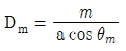
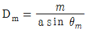
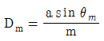
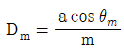
39. 다음 중 홀로그램의 특성이 아닌 것은?
40. 광통신에 주로 사용되는 C-band 의 파장 영역은?
3과목: 광학계측과 광학평가
41. 다음 중 He-Ne 레이저의 발진파장에 해당되는 것은?
42. 현미경 검사 표본(KS B 5603)은 직선을 평행으로 그은 격자 모양의 것으로 하고, 1mm 길이에 그어진 직선의 수에 따라 0종, 1종, 2종으로 구분된다. 다음 중 1종에 해당하는 직선의 수는?
43. 카메라 렌즈의 f 값이 f-2 인 렌즈와 f-4 인 렌즈가 있다. 두 렌즈의 노출 속도비의 값은?
44. 대물렌즈의 초점거리 5mm, 광경통 길이 16cm, 투사대안 렌즈의 초점거리 5cm 인 현미경에 길이 25cm 인 카메라가 부착된 현미경 사진장치가 있다. 이 사진 건판상의 총 배율은?
45. 색지움(색수차가 소거됨) 렌즈에 대한 설명이 틀린 것은?
46. 전체 홈(groove)의 수가 N 인 회절격자에 의해 m 차로 회절되는 빛에 대한 회절격자의 분해능 R 은?
47. 다음 중 뉴턴 원무늬(Newton's rings) 실험을 이용하여 볼록렌즈와 곡률반경을 측정하려 할 때 필요한 값이 아닌 것은?
48. 굴절률(n = 1.5)이 같은 두 렌즈가 30cm 떨어져 있는 광학계의 만곡수차(field curvature)를 제거하고자 한다. 첫 번째 렌즈는 볼록렌즈, 두 번째 렌즈는 오목렌즈이며 두 렌즈 모두 초점거리가 30cm 이다. 이 광학계의 초점거리는 몇 cm 인가?
49. 다음 중 광학렌즈의 재료로 사용되지 않는 것은?
50. 어떤 쌍안경에 7 x 50 이라는 숫자가 쓰여 있다. 이 쌍안경의 출사동(exit pupil)의 직경은 약 몇 mm 인가?
51. 광학유리 지도(map)에 관한 설명으로 옳은 것은?
52. A 지점에서 발사된 빛이 B 지점에 놓여있는 거울에 반사 되어 A 지점까지 되돌아 오는데 10-6초가 걸렸다면 A 지점 과 B 지점사이의 거리는 몇 m 인가? (단, A 지점과 B 지점 사이는 진공으로 되어있다.)
53. 그림과 같은 프리즘을 통과하는 광이 프리즘의 빗면을 통과하여 공기 중으로 전파되지 못하도록 하려고 한다. 이 프리즘의 굴절률이 빛의 파장에 관계없이 일정하다면 이 프리즘이 가져야 할 최소 굴절률은 얼마인가?
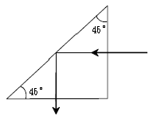
54. 다음 그림과 같이 2차경에서 오목면경을 사용하여 주경의 초점 밖에서 도립상을 얻는 방식의 반사망원경은?
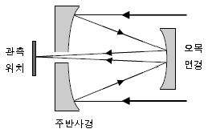
55. 다음 중 일반렌즈용 광학재료가 갖추어야 할 조건이 아닌 것은?
56. 정각(꼭의각)이 α이고, 최소편의각이 δm인 분산 프리즘의 굴절률은?
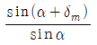
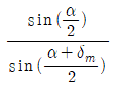
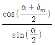
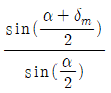
57. 카메라 렌즈의초점거리가 80mm이고, 앞쪽 입사각 렌즈의 크기는 55mm이며, 뒤쪽 출사쪽 렌즈의 크기는 30mm이다. f-수가 1.4인 경우, 이 렌즈의 구경(STOP) 직경은 약 몇 mm 인가?
58. 일반적인 광학유리의 구성 원소 중 가장 많이 포함되는 것은?
59. 사진기의 조리개 구경을 반으로 줄일 경우, 사진기의 f-수와 필름면에 도달하는 빛의 선속밀도에 관한 설명으로 옳은 것은?
60. 렌즈의 설계를 위해 참고하여야 할 광학유리의 물성과 무관한 것은?
4과목: 레이저 및 광전자
61. 많은 종류의 레이저에서 플라즈마관의 창(Window)이 브루스터(Brewster) 각도로 부착되어 있는 것을 볼 수 있다. 그 이유로 가장 적합한 내용은?
62. 결정구조 중 전기광학 특성인 포켈스 효과(Pockels effect)를 보이는 구조로 옳은 것은?
63. 다음 레이저 중 화학반응에 의한 레이저 발진이 일어날 수 없는 것은?
64. 다음 중 레이저와 주요 발진 파장의 연결이 틀린 것은?
65. 다음 중 출력이 높아 절단, 용접 등 산업용 공작기계에 많이 사용되는 레이저는?
66. 레이저 공진기는 서로 마주 보는 두 개의 거울 사이에서 광속이 반사를 반복하면서 오랫동안 머물도록 고안된 것이다. 이는 어떤 간섭계를 이용한 것인가?
67. 등방성 물질인 클로로포름(CHCl3)에서 관찰할 수 있는 효과는?
68. 굴절률 타원체(index ellipsoid) 방정식이 0.4X2+0.4Y2+0.3Z2=1인 매질에서 x 축 방향으로 편극된 광의 굴절률은 약 얼마인가?
69. 펄스폭이 아주 좁은 펄스레이저(10-12s 이하)를 이용하는 분야로 적절하지 않은 것은?
70. 음파를 이용한 광변조는 음파가 만드는 회절격자에 의한 빛의 회절현상을 이용한 것이다. 그림과 같이 음파면에 대해 θ의 각도로 입사하여 다시 같은 각도 θ로 1차 회절 될 때 회절광의 세기가 가장 크게 되는 조건은? (단, λ와 λs는 물질 내의 빛과 음파의 파장이고, n은 물질내의 빛의 굴절률이다.)
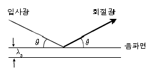
71. 그림은 니콜 프리즘(Nicol prism)을 나타낸 것이다. 광선 A와 B에 대하여 바르게 기술한 것은? (단, ↔ 와 ↕ 는 각각 z축, y축 전기장의 진동방향을 나타낸다.)
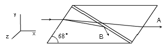
72. 다음 중 제2고조파 발생을 위한 위상정합조건이 아닌 것은? (단, k1, k2, k3는 각 평면파의 위상정수, kω는 파수, nω는 굴절률, n2ω 는 제2고조파의 굴절률이다.)
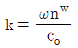
73. 빛이 등방성의 작은 입자들에 의하여 산란이 일어날 때 만일 입자들의 크기가 파장에 비하여 무시할 수 있을 정도로 작다면, 산란되는 빛의 세기(Isc)와 파장(λ)과의 관계는?
74. 632nm 의 입사광에 대해 1/4파장판의 정상광선 굴절률이 1.538, 이상광선 굴절률이 1.549 일 때 1/4파장판의 최소 두께는 약 몇 mm 인가?
75. 다음 중 레이저를 이용하지 않는 것은?
76. 선폭 Δv=4 × 102Hz인 레이저의 가간섭시간은 몇 초인가?
77. 네온 원자는 [3s2]상태에서 [2p4]상태로 천이할 때, 파장 632.8nm의 광을 방출하며, 천이율은 A24=606×106s-1이다. 이 때 방출된 광의 진폭수 폭은 약 몇 MHz 인가?
78. 가간섭거리(coherence length)에 대한 설명으로 적절하지 않은 것은?
79. 다음 중 넓은 대역에 걸쳐 발진파장의 가변이 가능한 레이저는?
80. 어떤 레이저 광원의 발진주파수 대역폭이 4.5×108Hz로 주어질 때 가간섭거리(coherence length)는 몇 cm인가?